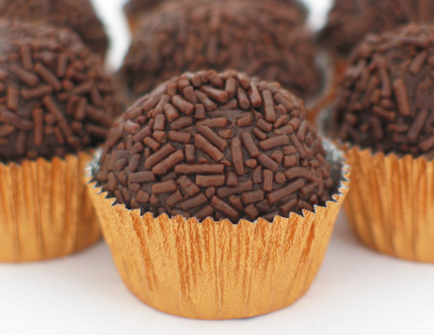

Brigadeiro

Description
Brigadeiro is a traditional Brazilian dessert made by heating three key ingredients together - unsalted butter, cocoa powder, and condensed milk, which are then rolled into a small ball, similar in shape to a truffle. First made in the 1940s, when fruit and sweets were in short supply, brigadeiro was born out of creativity with just a few ingredients.
A source of national pride, it is said that if you make brigadeiro for someone who is feeling bad, there are good chances that it will make them smile.
Ingredients
- 1 (14 ounce) can sweetened condensed milk
- 2 tablespoons powdered cocoa
- 2 tablespoons unsalted butter
- chocolate sprinkles as needed, around 1 cup
Steps
- Combine condensed milk, cocoa, and 2 tablespoons butter in a saucepan; bring to a boil. Reduce heat to low and cook, stirring constantly, until brigadeiro mixture thickens and pulls away from the bottom and sides when the pan is tilted, 10 to 15 minutes.
- Remove from heat and let brigadeiro mixture cool to room temperature, about 1 hour.
- Scoop teaspoonfuls of the brigadeiro mixture and roll into balls with greased hands.
- Spread chocolate sprinkles on a shallow plate. Dip and roll brigadeiros in sprinkles.
Source: allrecipes and tasteatlas
Return to recipes list